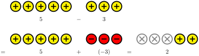
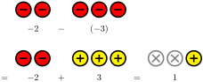
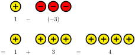
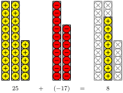

Understand how to visualize addition using integer chips and zero pairs.
Understand how to visualize subtraction using integer chips and zero pairs.
At the end of Section 26.4, we talked about how certain subtraction problems do not work well with the basic idea of counting objects because you can be asked to subtract off a number that’s larger than the number of objects that you have.
It turns out that we can still represent this idea, but we have to use a different type of manipulative. These are commonly called integer chips. These are plastic circles where the two sides are different colors (usually yellow and red). We are going to enhance these by also using a plus and minus sign in our diagrams. These objects allow for multiple alternative interpretations, such as electric charges or savings/debt. Here are some collections of chips and the numbers that they represent.
Notice that if we only focus on the positive chips, they behave exactly like we might expect.
If we were to add together negative chips, it turns out that the arithmetic would work out correctly as well.
But what happens when we have a mixture of the two types of chips? Since one step left followed by one step right would leave you right back where you started, we can see that a positive chip and a negative chip will cancel each other out. And by eliminating those pairs, we can see what the final answer would be.
Activity28.1.Calculating Using Integer Chips.
Try it!
Calculate \(4 + (-5)\) using an integer chip diagram.
Solution.
As always, we want to avoid treating this as a system of "rules." We want to be able to understand these manipulatives as objects that represent familiar ideas. Specifically, we can relate these chips to movement on the number line. Thinking about the positive chips as movement to the right and negative chips as movement to the left, we can translate the calculation into a number line picture. This is a subtle shift from what we were looking at before. Initially, we were just starting from a position and making one movement. Now we’re starting from zero and making two movements. But the primary concepts still remain the same.
Activity28.2.Comparing Integer Chips and the Number Line.
Notice that this framework allows us to add any two numbers together, which is slightly more than what we did on the number line in the previous section. For that, addition always meant movement to the right. But this picture shows us that adding a negative number means moving to the left.
Try it!
Calculate \(3 + (-5)\) using an integer chip diagram. Then draw a number line picture to represent the calculation as movement on the number line.
Solution.
Now that we know how to represent addition of any two numbers with these chips, we will turn our attention to subtraction. Let’s look at \(5 - 3\text{.}\) Instead of thinking of subtraction as "taking away" chips, we can get an equivalent form by flipping over the subtracted chips and using zero pairs.

It’s easy for us to verify that this gives us the same final answer as any other method we use. But what is happening here? What we have done is replace the concept of "taking away" with a form of "undoing" the steps. How do we "undo" three steps to the right? By taking three steps to the left! The chips are merely a way of representing that concept.
Activity28.3.Subtracting Negatives with Integer Chips.
There were calculations that we were unable to do with our previous concepts, but we can now do with the integer chips. Here is the calculation of \(-2 - (-3)\text{.}\)

Try it!
Calculate \(1 - (-3)\) using an integer chip diagram. Then draw a number line picture to represent the calculation as movement on the number line.
Solution.

Activity28.4.Subtracting Negative Numbers.
In the end, the goal is not for you to have to actually count chips. The chips are symbols that help us to think through situations and understand the mathematical ideas behind the calculations. We can algebraically represent the process by writing the symbols without drawing the pictures.
There is a common phrase that is associated with subtraction: "Subtraction is addition of the opposite." Integer chips and the number line can help to illuminate this concept. Consider the following diagram:
How would you describe the idea that and are "opposite" numbers? How well does this idea extend to other numbers?
2.
Describe how integer chips can be used to demonstrate the idea that "subtraction is addition of the opposite." (Hint: You may want to think about the physical manipulation of the chips when doing subtraction, and the relationship between a number and its opposite.)
3.
The more technical term of the "opposite" of a number is the "additive inverse" of a number. The additive inverse of a number is the number that has the property that \(a + b = 0\text{.}\) Using this definition, we can see that is the opposite of since \(1 + (-1) = 0\text{.}\) Use this definition to argue that the additive inverse of the additive inverse of a number is itself.
Integer chips can be combined with a variable chip to represent simple algebraic equations. Here is a representation of the equation \(x + 2 = 6\text{:}\)
The equation can be "solved" by adding the same type and number of chips to both sides of the equation until the unknown chip has been isolated. Describe the step required to isolate the unknown and determine its value.
2.
The concept of division is making even groupings of things. The following is a visual demonstration of the fact that \(2x = 6\) means that \(x = 3\text{:}\)
Draw a series of integer chip diagrams that demonstrate solving the equation \(2x + 4 = -8\text{.}\)
3.
This type of visual representation of solving equations can be very helpful for introducing young children to algebraic reasoning. However, the practical use of this turns out to be very limited. Why do you think that is?
Section28.3Deliberate Practice: Practice with Negatives
Algebra is a skill, which means it requires practice to become proficient. But it will take more than rote repetition to get there. Deliberate practice is the thoughtful repetition of a task. For each of these sections, you will be given a list of specific skills or ideas to focus on as you practice thinking through the problems.
Focus on these skills:
Mentally visualize collections of integer chips to help think through the calculation.
Instructions: Perform the given calculation mentally.
1.
Calculate \(24 + (-38)\) mentally.
2.
Calculate \(-36 - 57\) mentally.
3.
Calculate \(25 - (-18)\) mentally.
4.
Calculate \(-23 + 74\) mentally.
5.
Calculate \(-44 - (-57)\) mentally.
6.
Calculate \(35 + (-68)\) mentally.
7.
Calculate \(-29 - 55\) mentally.
8.
Calculate \(-242 + (-159)\) mentally.
9.
Calculate \(186 - (-372)\) mentally.
10.
Calculate \(-218 - (-386)\) mentally.
Section28.4Closing Ideas
In this section, we introduced the idea of integer chips, and used them to describe all integer addition and subtraction problems, using both positive and negative integers. But we’re not limited to just these things. We can take the idea of these chips and use them with the idea of base-10 blocks by replacing the cubes with chips.

We can also imagine breaking each of the chips into wedges and using them for addition and subtraction of fractions. And since decimals are just fractions, we can also imagine using them with decimals. Not that we would actually do that, but this is is conceptually possible.
We also saw in the last couple worksheets that we can connect these chips to talking about the opposite of numbers and solving equations.
This flexibility is one of the marks of a beautiful idea in mathematics. The ability to take one idea and connect it to so many other ideas means that we now have an expanded vocabulary with which to talk about our mathematical ideas. It also means that when it comes down to solving problems, we have yet another tool in our toolbox. And broadening that toolbox is the ultimate goal of college mathematics.
Section28.5Going Deeper: Mental Arithmetic
For many students, mental arithmetic usually feels quite complicated and can be extremely frustrating. One of the big challenges for mental arithmetic is that most people try to do mental arithmetic the way they do arithmetic on paper. Unfortunately, this is both extremely inefficient and unnecessarily difficult. The primary reason has to do with how the paper method relies on being able to write down a digit to remember it later, but our brains simply cannot do that.
To get a sense of just how central that memory is, we’re going to work through adding three three-digit numbers together, and we’re going to put a box around every number that appears in the process:
Ones digit: \(\boxed{7}\) plus \(\boxed{6}\) is \(\boxed{13}\text{,}\) plus \(\boxed{3}\) more is \(\boxed{16}\text{.}\) Write the \(\boxed{6}\) below and carry the \(\boxed{1}\text{.}\)
Tens digit: \(\boxed{1}\) plus \(\boxed{8}\) is \(\boxed{9}\text{,}\) plus \(\boxed{3}\) more is \(\boxed{12}\text{,}\) plus \(\boxed{2}\) more is \(\boxed{14}\text{.}\) Write the \(\boxed{4}\) below and carry the \(\boxed{1}\text{.}\)
Hundreds digit: \(\boxed{1}\) plus \(\boxed{3}\) is \(\boxed{4}\text{,}\) plus \(\boxed{2}\) more is \(\boxed{6}\text{,}\) plus \(\boxed{5}\) more is \(\boxed{11}\text{.}\) Write down these digits to get the final result.
Let’s make a list of all the digits that appeared in the process, keeping track of the order in which they appeared:
When you look at this string of numbers, the critical observation to make is that the actual answer to the calculation does not appear anywhere. In fact, when you look at the numbers, you may have a hard time even finding the digits that make up the answer. We’ll indicate those values with an arrow:
Now that they’ve been marked, notice how many numbers appear in between them. These digits are numbers that you’re trying to hold in memory while all the other numbers are going through your head. Between the 6 for the ones digit and the 11 for the hundreds and thousands digit in the last step, there are 16 numbers in between, and one of those other numbers is one you were supposed to have memorized.
When following this algorithm on paper, our brains are allowed to forget those digits because they’re written down. But when we do this mentally, we have to try to keep those numbers in memory while other digits are being processed. While it helps to have reached a level of automaticity so that you’re less consciously doing those computations, it’s still quite challenging for most people.
The standard addition algorithm uses a digit manipulation scheme. What this means is that we’re looking at each digit as its own object. In the calculation, the number 387 is never used as a number. It’s broken down into three separate pieces:3, 8, and 7. This causes extra strain on our brains when handing it because it requires more brain power to think about three separate objects rather than thinking about one.
The big transition that makes mental arithmetic easier is to reorganize the calculation so that we don’t have to remember numbers for as long. The representations of arithmetic on the number that we developed a few sections ago are a big towards that end. Here is how we’re going to translate the process:
Add the first two numbers: \(\boxed{387}\) plus \(\boxed{200}\) is \(\boxed{587}\text{,}\) plus \(\boxed{30}\) more is \(\boxed{617}\text{,}\) plus \(\boxed{6}\) more is \(\boxed{623}\text{.}\)
Add the next number: \(\boxed{623}\) plus \(\boxed{500}\) is \(\boxed{1123}\text{,}\) plus \(\boxed{20}\) more is \(\boxed{1143}\text{,}\) plus \(\boxed{3}\) more is \(\boxed{1146}\text{.}\)
The total number of boxed values is significantly lower. There were 23 in the first method and only 14 in the second method.
However, the numbers that we were working with are also significantly larger. In the first method, we only needed to be comfortable with small addition calculations, whereas the second method requires a level of fluency with adding in different place values.
The new approach does not require any long term memory, and the final number is the complete final answer. In fact, the process is basically just keeping a running total as you work your way through, so that you only really have to remember keep three numbers in your head at any time (the previous total, the number you’re adding, and the new total).
As with most things mathematical, this should not be seen as a "rule" for how you’re "supposed to" do mental arithmetic. It turns out that people who are good at mental arithmetic employ a number of different techniques based on patterns that they identify as being familiar. It’s not necessary to always go in the same order every time, especially if there are patterns that make more intuitive sense.
For example, in this calculation, you might notice that \(300 + 200 + 500 = 1000\text{.}\) This is a number that you can put into memory (with a little bit of practice) because it’s a "nice" number. And then you would only need to add three two-digit numbers together instead. You might also notice that \(387 + 3 = 390\text{,}\) which also brings you to a nice number. Then you can add in the hundreds and tens digits, leaving the final 6 for the very last step.
You could also use other groupings if they make sense. For example, you might see
The main point is that mathematics favors those who are flexible in their thinking instead of being rigid. Throughout this book, we’ve emphasized just how restraining a rule-based approach to mathematics can be, and this thread follows all the way back to the ways that you’ve learned your basic arithmetic. Hopefully, as you’ve been working your way through this book, you’ve started to move away from those things and have started to build a deeper understanding of mathematics.